User guide · version 1.0
Sleuth.
Find any tag, in any drawing, on any drive. Even when the PDF is a scan.
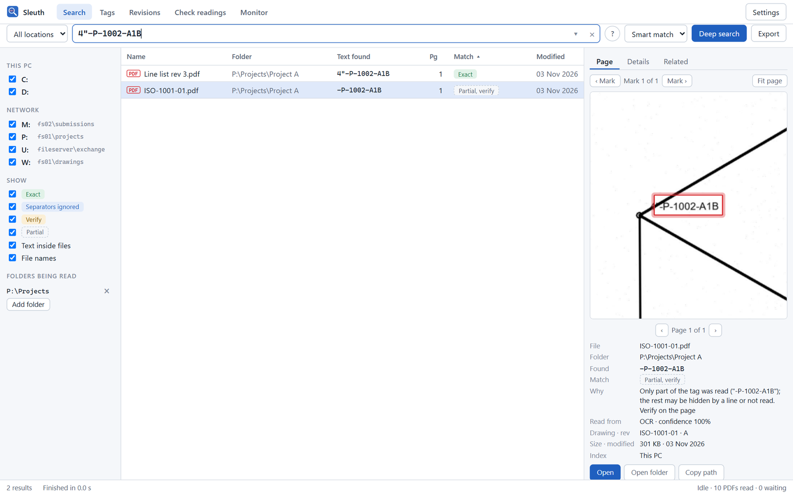
Sleuth is our office's search tool for drawings and documents. Type a tag and it shows every file that contains it, which page it's on, and the spot on the page.
Windows search, and tools like Everything, only look at file names, or at text that a PDF already carries. Most of our drawings are scans or plots with no text inside, so those tools can't find a line number printed on an isometric. Sleuth reads every page once, including scans, and remembers what it read. Searches then take a fraction of a second.
6"-P-1001-A1B, 6-P-1001-A1B and 6P1001A1B are the same tag to Sleuth.Sleuth has two parts. The Sleuth window is what you search in. The Sleuth reader is a background program that keeps a list of file names on your drives and reads PDFs in the folders you choose. It slows down when you're busy and speeds up when the PC is idle. Everything it learns is kept in an index on your PC, plus the office's shared reading cache, which is why searches are instant.
Sleuth installs for your Windows account only. You don't need administrator rights, and it takes about a minute.
Sleuth_1.0.1_x64-setup.exe (about 56 MB), or use the copy IT shared.Sleuth_x.y.z_x64-setup.exe /S. To choose the folder, add /D=C:\Tools\Sleuth as the last argument.| Item | Where | What it is |
|---|---|---|
| Sleuth | %LOCALAPPDATA%\Programs\Sleuth | The window (sleuth.exe), the reader (sleuth-worker.exe), the PDF engine and the OCR models |
| Your settings | %APPDATA%\Sleuth\settings.json | Folders to read, cache folder and options. Updates never touch this file. |
| Your index | %LOCALAPPDATA%\Sleuth | The file-name list, the text read from PDFs, OCR models and logs |
Two things need to be right: the shared reading cache, and the folders you want Sleuth to read. Both take a minute.
Sleuth uses the office folder U:\Sleuth-cache automatically. If your PC has U: mapped, there is nothing to do. If it doesn't, Sleuth shows a yellow message at the top of the window. If you leave it, Sleuth opens Settings and highlights the place to fix it:
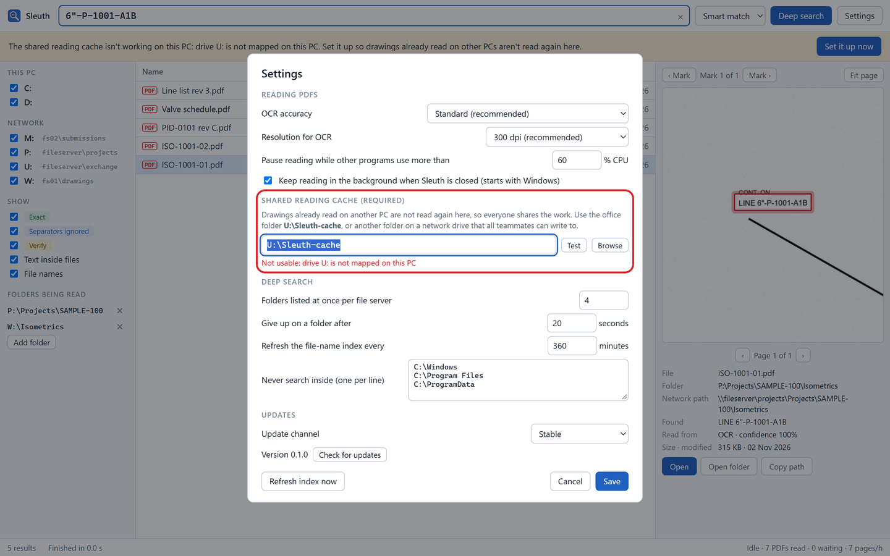
Sleuth always knows the names of files on all your drives. To search inside PDFs, it has to read them first, and it only reads the folders you choose. Add the project folders you work in:
P:\Projects\SAMPLE-100. Sleuth starts reading its PDFs in the background.Sleuth's window has a search bar at the top and three panes below it.
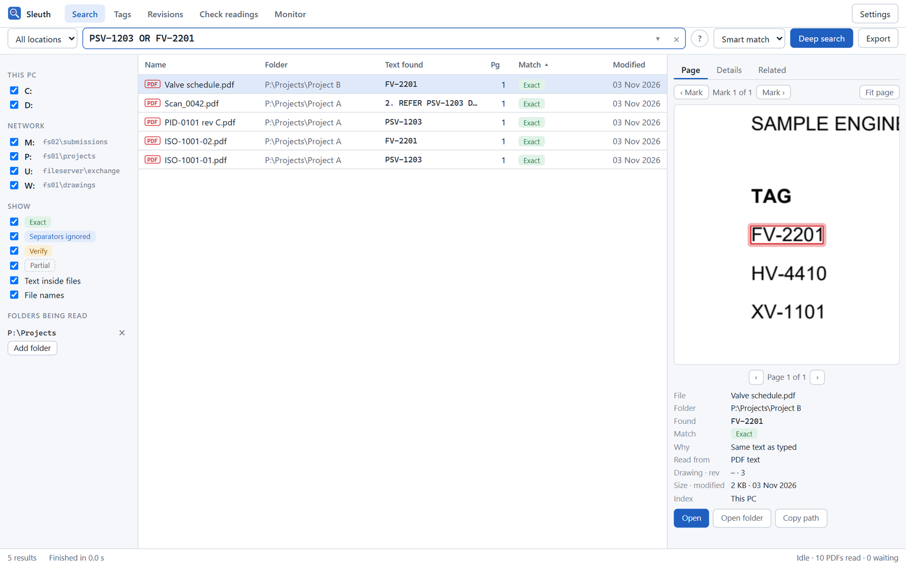
1234567| # | Part | What it does |
|---|---|---|
| 1 | Views | Search, Tags, Revisions, Check readings and Monitor (sections 10 to 14). |
| 2 | Project and search box | Pick a project, or All locations. Type a tag or any text; results appear as you type. Ctrl+F jumps here. ? shows the search syntax; ▾ shows recent and pinned searches. |
| 3 | Smart match, Deep search, Export | Smart match also finds tags written differently; Exact only hides those. Deep search walks the drives live (section 8). Export saves the results to Excel or CSV. |
| 4 | Locations and filters | Tick the drives to search. Show or hide result types. Manage Folders being read. |
| 5 | Results | One row per file: name, folder, the exact text found, page and match type. Hover a row to see why it matched. Click a column heading to sort. |
| 6 | Preview | Page: the page with the text circled in red. Details: title block and how the file was read. Related: drawings sharing tags. |
| 7 | Status bar | Number of results, the office server if you use one, and what the reader is doing. Click the reader status for details. |
Type what you're looking for. Plain text always works; a few extras narrow things down.
| Looking for | Type | Notes |
|---|---|---|
| A line number | 6"-P-1001-A1B | Quotes, dashes and spaces are optional: 6P1001A1B works too. |
| An instrument or valve tag | PSV-1203, FV 2201 | A tag typed with a space is still found. |
| A document number | DOC-1001-17 | Finds the document itself and every drawing that refers to it. |
| A drawing number or file name | ISO-1001-02 | File names are searched on every drive, read or not. |
| Several things at once | PSV-1203 flare | Files that contain all the words, anywhere in the file. |
| Any of several tags | PSV-1203 OR PSV-1204 | OR (capitals) or | between alternatives. |
| Drawings by title block | dwg:ISO-1001 rev:C | Drawing number contains, revision. Also disc:piping. |
| Only one kind of tag | type:instrument FV | Kinds: line, instrument, valve, equipment, support, weld, drawing, spec. |
| Words in the file name | name:datasheet | ext:pdf limits the file type. |
| An exact phrase | "rev c" | Put the phrase in double quotes. An inch mark inside a tag, as in 6"-P, is never treated as a quote. |
| Key | Does |
|---|---|
| Ctrl+F | Go to the search box |
| Enter in the search box | Search now; Ctrl+Enter runs a deep search |
| Esc | Clear the search |
| ↓ / ↑, Page Down / Page Up | Move through results; the preview follows |
| Enter on a result, or double-click | Open the file |
Every result says how it matched and where the text came from. This is what lets you trust Sleuth on engineering work.
| Label | Means | What to do |
|---|---|---|
| Exact | The text on the page is exactly what you typed. | Nothing; open it. |
| Separators ignored | Same letters and digits, written with different dashes, quotes or spaces. PSV1203 found PSV-1203. | Usually right. Glance at the preview. |
| Verify, OCR unsure | Either the OCR wasn't confident, or a character could be a look-alike (O/0, l/1, S/5, B/8, Z/2, G/6). | Check the preview before relying on it. |
| Partial, verify | Only part matched: your text is inside a longer tag (PSV-120 in PSV-1203), or only part of the tag could be read, for example because a pipe line crosses the size (-P-1002-A1B for 4"-P-1002-A1B). | Look at the page. The row's "Why" says which. |
| Name · … | Found in the file name, not inside the file. | Useful when the PDF hasn't been read. |
Hover over a result to see why it matched and where the text came from; the preview pane shows both.
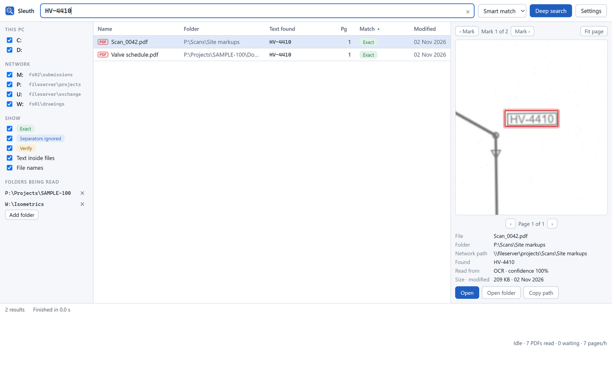
Click a result and the page appears on the right, with the text circled.
\\server\share form, which works on any PC whatever drive letters it uses.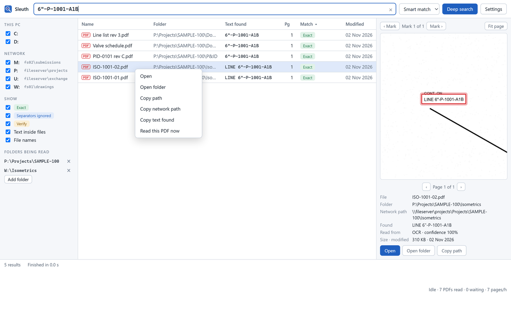
A normal search looks in what Sleuth already knows. A deep search also walks the drives live, right now.
Use it when a file is new, sits outside the folders being read, or may be on a drive Sleuth hasn't listed yet. Type your search and click Deep search (or press Ctrl+Enter).
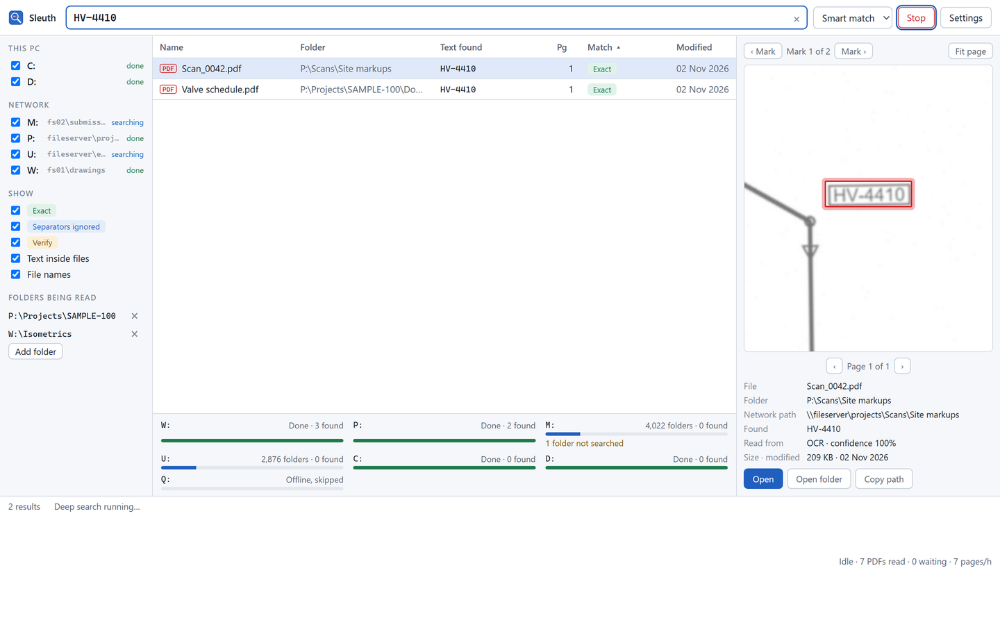
The Sleuth reader works quietly in the background so searches are instant.
It works in two stages, both shown in the status strip at the bottom of the window. The strip stays visible everywhere and updates every few seconds; click either stage for the details on the Monitor page.
Click either stage in the status strip to open Monitor. It shows each drive (listing, done, partly listed or offline, with the reason), each reading folder with how many of its PDFs are read, and the files that could not be read and why. A reading folder given by a drive letter that is not mapped on this PC is flagged there.
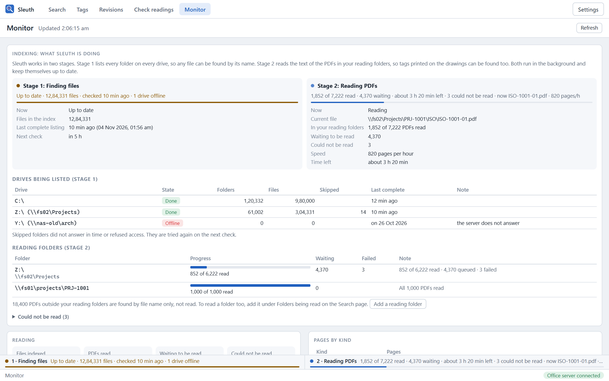
| Reason shown | Meaning |
|---|---|
| password protected | The PDF is encrypted. Sleuth can still find it by name. |
| damaged or not a PDF | The file is corrupt, or has a .pdf name but isn't one. |
| could not be opened: … | The file moved, is locked, or you have no access. Network hiccups are retried automatically: up to 5 times, at growing intervals, before a file is listed here. |
The Tags view lists every engineering tag Sleuth has found in the drawings it has read, with the documents and places it appears in.
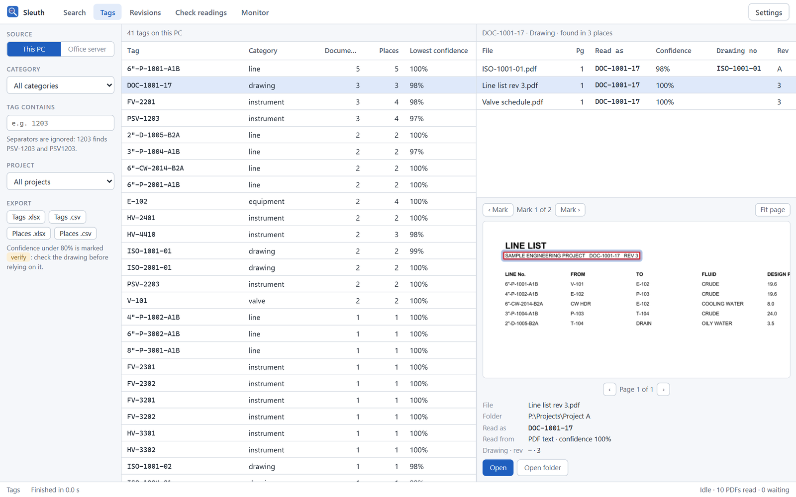
6"-P-1001-A1B is one tag, never also "equipment P-1001".1203 finds PSV-1203), project, and This PC or Office server.The Revisions view groups drawings by drawing number and compares the tags of any two revisions.
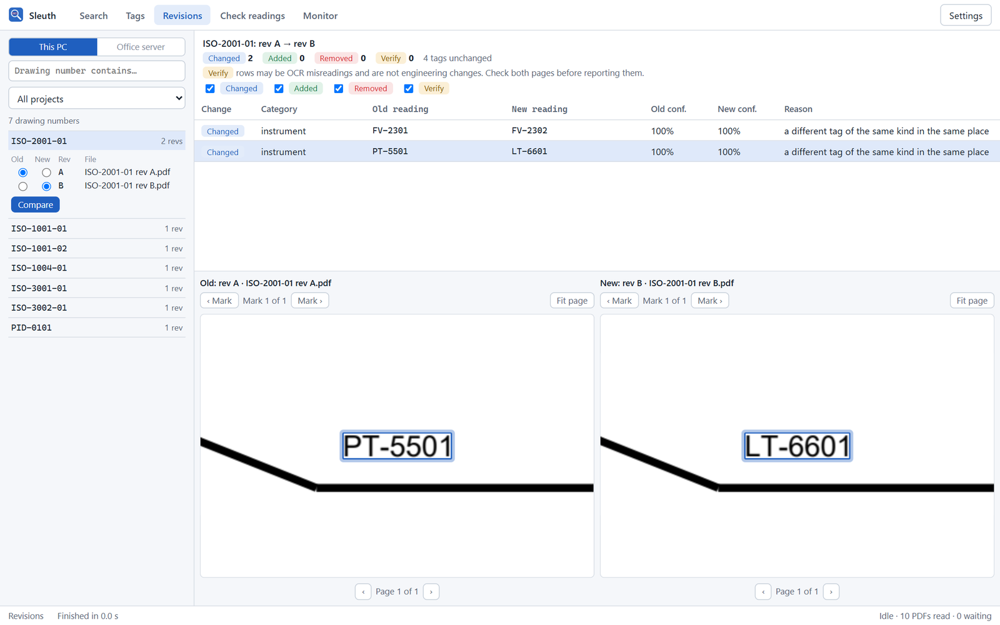
| Change | Means |
|---|---|
| Changed | A different tag of the same kind in the same place on the sheet. |
| Added / Removed | A tag only in the new, or only in the old revision. |
| Verify | The difference could be an OCR misreading: the two readings differ only by look-alike characters, or one of them was read with low confidence. |
The preview pane has three tabs: Page, Details and Related.
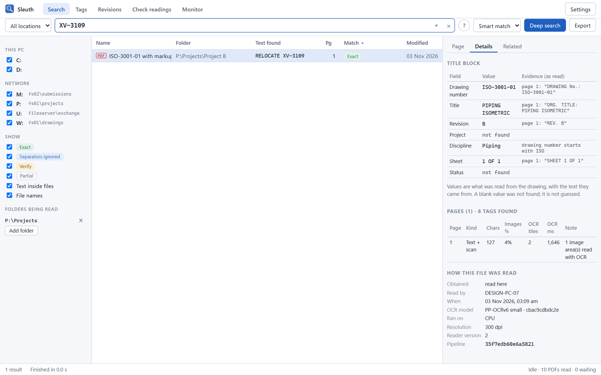
page 1: "REV. B", or OCR 98% when it was read from a scan).| Kind | Means | Read with OCR |
|---|---|---|
| Text layer | A plotted or exported PDF with real text | No (only the title block, if its text has no drawing number) |
| Text + scan | Real text plus pasted images, stamps or scanned mark-ups | Only the images |
| Scanned | A scan, or a picture of the drawing | The whole page |
| Outlined text | Text plotted as lines | The whole page |
| Damaged | The page cannot be opened | No; the reason is shown and the other pages are read |
The Check readings view lists the lines OCR was least sure of, worst first, with the image of each beside it.
The Monitor view shows how reading is going and why: useful when something seems slow or missing.
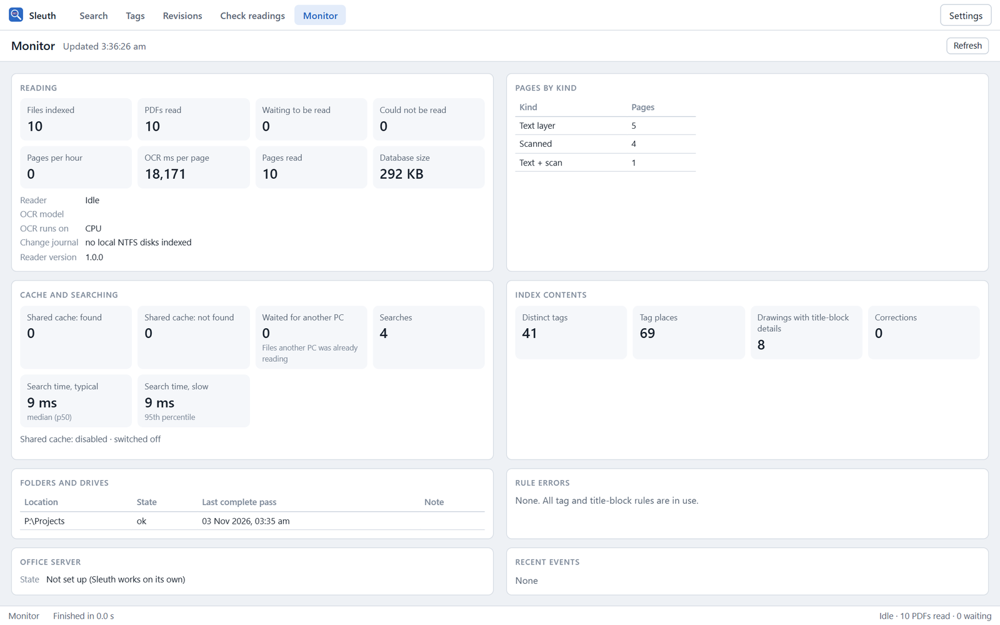
Both are optional. Sleuth works fully on its own.
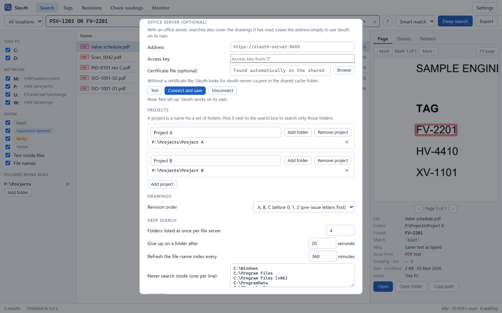
A project is a name for a set of folders. Add them in Settings → Projects, then pick the project next to the search box to search only its folders. The Tags and Revisions views have the same project filter.
If IT runs the Sleuth office server, it reads the shared project folders once for everyone. Your searches then include its results (marked Office), and your PC leaves those folders to the server.
You only see projects IT has given you. If the server is offline, Sleuth says so above the results and keeps searching your own index. Disconnect returns to working on your own.
Reading a scanned sheet takes about a minute. The shared cache means that minute is spent once for the whole office, not once per PC.
When any PC finishes reading a PDF on a network drive, it saves the result in the shared cache folder (by default U:\Sleuth-cache). Before reading a PDF, every other PC checks the cache first. If the same drawing is there, it is taken from the cache in an instant. Files are matched by their content, so a copied or renamed drawing is recognised too.
Without the cache, every PC would read every drawing itself: slower for you, and much more load on the network. So the cache is required. If it isn't working, Sleuth:
If the cache is only temporarily unreachable (you're off-site, or the server is down), Sleuth shows a quiet notice instead and keeps reading on your PC. It starts using the cache again by itself when it's back.
Open with Settings at the top right.
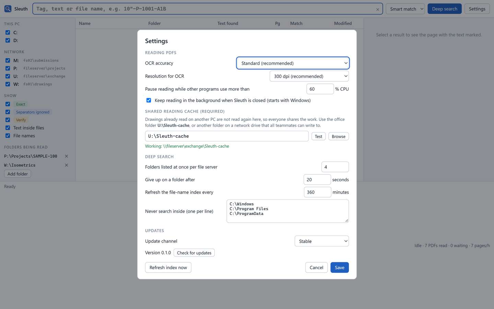
| Setting | What it does | Default |
|---|---|---|
| OCR accuracy | Standard is recommended. High uses a larger model, downloaded once (140 MB); it is about 3× slower and found no extra text in our tests. | Standard |
| Resolution for OCR | 300 dpi reads 2.5 mm text on A1/A3 sheets reliably. Use 400 dpi only for very small print; it is slower. | 300 dpi |
| Read slowly while other programs use more than … | Reading drops to one thread while your PC is busy with other work. | 60% CPU |
| Keep reading in the background | The reader keeps working when the window is closed, and starts with Windows. | On |
| Shared reading cache | The office folder for shared results. Required; see section 16. | U:\Sleuth-cache |
| Folders listed at once per file server | How hard deep search works each server. Raise for speed, lower if a server struggles. | 4 |
| Give up on a folder after | A folder that doesn't answer in this time is skipped and listed. | 20 s |
| Refresh the file-name index every | How often the list of file names is rebuilt. | 360 min |
| Never search inside | Folders Sleuth never walks or reads, one per line. | Windows and program folders |
| Update channel | Stable for everyone. Development builds only if you're testing new versions. | Stable |
| Refresh index now | Rebuilds the file-name list straight away, in the background. |
Sleuth keeps itself up to date. Your settings and index are always kept.
If a new version causes trouble, Settings → Updates → Roll back to version X reinstalls the release before it, checked the same way. Settings and the index are kept; an index made by 1.0 can still be opened by 0.1, which simply does not show the 1.0 views.
settings.json, your folders being read, and the index stay exactly as they were.| Problem | What to do |
|---|---|
| A drawing I know has the tag isn't found | Is its folder in Folders being read? If not, add it, or right-click the file and choose Read this PDF now. If you don't know where it is, use Deep search. Also try Smart match rather than Exact only. |
| Results say "Verify, OCR unsure" | Open the preview and read the tag yourself. Faint, skewed or handwritten text is harder to read; the label tells you to look. |
| "The shared reading cache isn't working" | Map U: or choose the folder IT gave you, in Settings → Shared reading cache → Test → Save. |
| Reading seems slow | Scans take about 20 seconds per sheet. Reading slows while you're busy and runs faster when you step away. The status strip says why it waits ("Reading starts when the file list is complete", "Reading slowly: other programs use 95% of the CPU") and how long is left. |
| A drive shows "Offline, skipped" | The share didn't answer. Check it in Explorer; when it's back, search again. |
| "N folders not searched" | Those folders were locked or too slow. Hover to see them. Raise "Give up on a folder after" if a server is just slow. |
| The window says the reader is restarting | Wait a few seconds; Sleuth restarts the reader automatically. |
| Windows blocked the installer | Click More info → Run anyway. This happens only for the first install. |
| I want to start the index from scratch | Close Sleuth, delete %LOCALAPPDATA%\Sleuth\index.db, and open Sleuth again. Results from the shared cache come back quickly. |
Does Sleuth send my drawings anywhere? No. Everything is read on your PC. Results are stored on your PC and in the office's shared cache folder. Nothing goes to the internet; the only internet traffic is checking GitHub for updates.
Does it change my files? Never. Sleuth only reads files.
Can it search DWG or Word files? Version 0.1 searches inside PDFs, and finds any file type by name.
Why does a file appear once even if the tag is on five pages? One row per file keeps the list readable. The preview steps through every mark and page.
%APPDATA%\Sleuth; the index, models and logs in %LOCALAPPDATA%\Sleuth.%LOCALAPPDATA%\Sleuth\logs\worker.log is useful to IT when something goes wrong.Settings → Apps → Sleuth → Uninstall. This removes the program, Start-menu entry and start-up entry. Your settings and index are left in place in case you reinstall; delete the two folders above to remove them too.
Print this page and keep it by your desk.
| I want to… | Do this |
|---|---|
| Find a tag | Type it. Dashes, quotes and spaces are optional. |
| See where it is on the sheet | Click the result; the red circle marks it. Mark › for the next one. |
| Open the drawing | Double-click, or Enter. |
| Open its folder | Right-click → Open folder. |
| Send a colleague the location | Right-click → Copy network path. |
| Search everywhere, live | Deep search, or Ctrl+Enter. |
| Make a folder searchable inside | Folders being read → Add folder. |
| Read one file right now | Right-click → Read this PDF now. |
| Check what's been read | Click the status at the bottom right. |
| Find any of several tags | PSV-1203 OR PSV-1204 |
| Only this project | Pick it next to the search box. |
| See every place a tag appears | Tags view → click the tag. |
| Compare two revisions | Revisions view → expand the drawing number. |
| Fix a wrong OCR reading | Check readings → type the text → Save correction. |
| Fix the shared cache | Settings → Shared reading cache → Test → Save. |
| Label | Trust it? |
|---|---|
| Exact | Yes. |
| Separators ignored | Usually; glance at the preview. |
| Verify, OCR unsure | Check the page yourself before relying on it. |
Sleuth 0.1 · Dexterity Design Services Pvt. Ltd. · Screenshots show Sleuth's own interface with results read from sample drawings; folder and server names are examples. Latest version and this guide: github.com/dexterity-admin/Sleuth